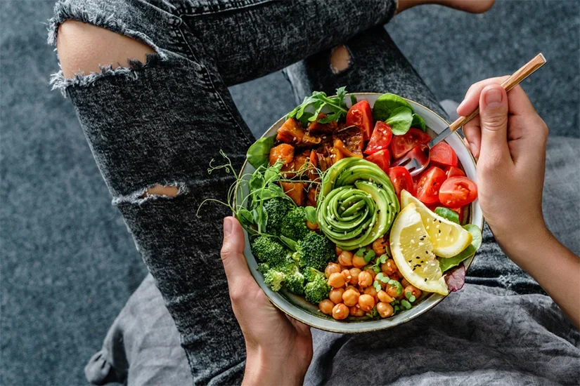
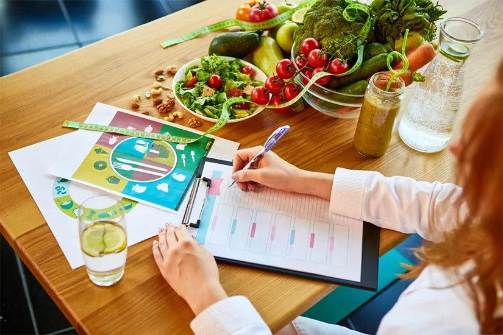
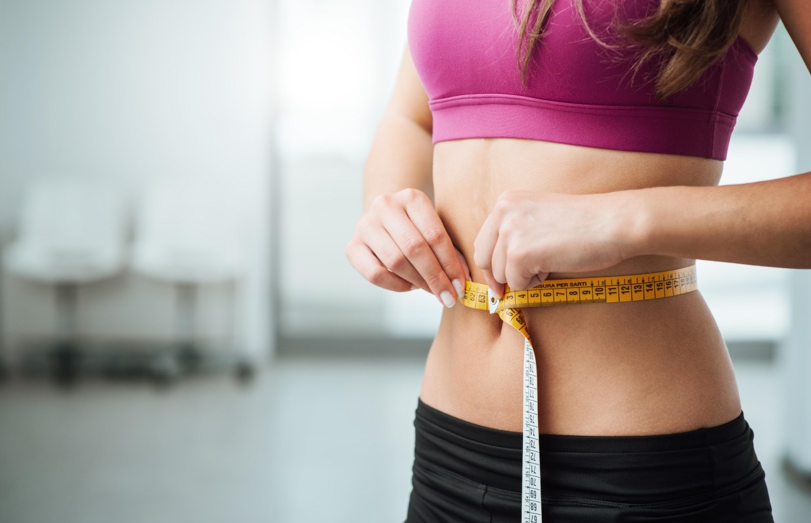
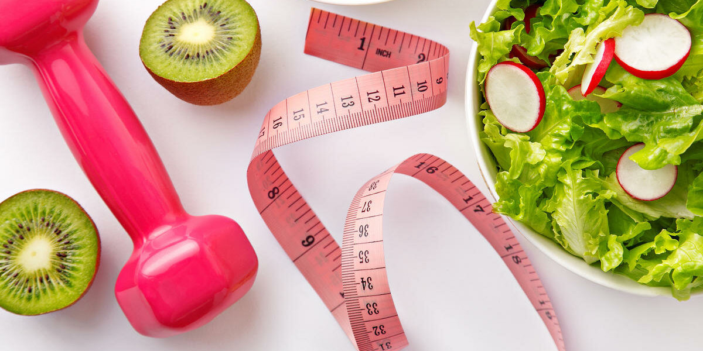
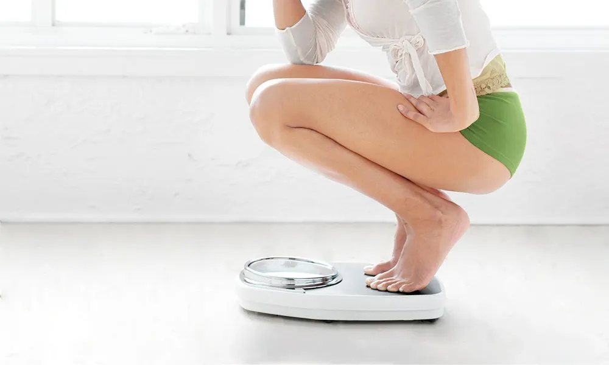
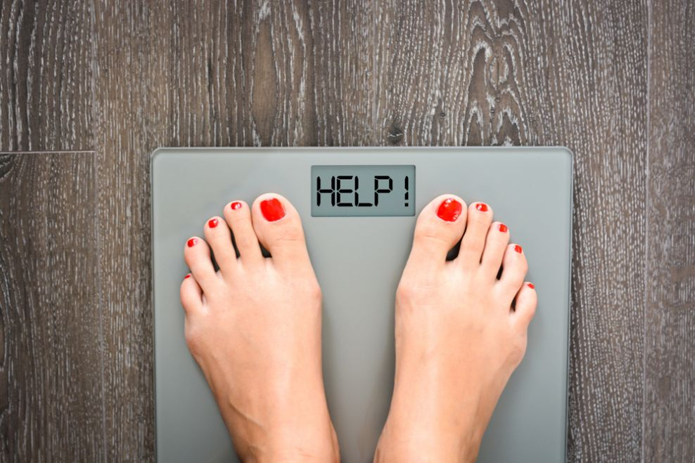
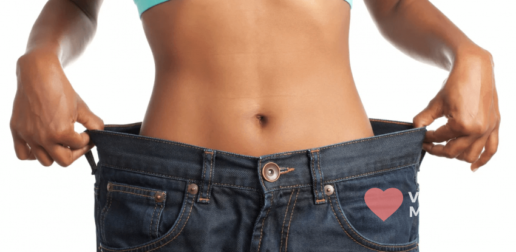
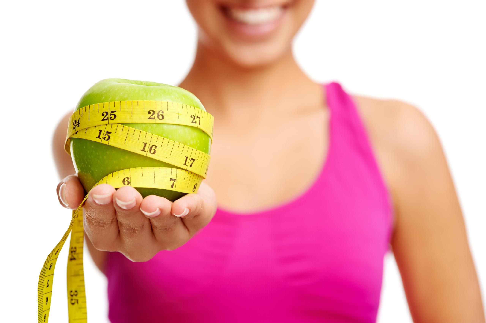

Cum sa slabesti sanatos. 7 sfaturi esentiale
Una dintre primele conditii ale sanatatii este aceea de a avea o greutate
normala. Practic, toate afectiunile au ca factor agravant excesul ponderal,
indiferent ca este vorba despre cele metabolice, cum este diabetul, sau
cardiovasculare.
Toate formele de cancer au printre cauze supraponderalitatea, dupa cum
afectiunile articulare sunt agravate de obezitate. Si pentru ca lista sa fie
completa, este bine de stiut ca inclusiv problemele de fertilitate pot fi
favorizate de excesul ponderal.
Ce beneficii are scaderea in greutate
Scaderea in greutate cu doar 5% din masa corporala aduce beneficii remarcabile pentru starea generala de sanatate. Aceste bonusuri castigate sunt tot atatea argumente pentru a continua un regim ce are ca scop reducerea greutatii. Iata 10 beneficii dovedite ale pierderii în greutate:
- se regleaza nivelul de zahar din sange in mod natural si scade riscul aparitiei diabetului;
- starea de sanatate a inimii se imbunatateste si se reduce riscul unui infarct miocardic;
- scade riscul accidentelor vasculare cerebrale;
- se imbunatateste tensiunea arteriala;
- este ameliorata calitatea somnului;
- creste mobilitatea;
- se reduc durerile articulare, mai ales cele de la nivelul soldului, genunchilor si gleznelor;
- creste stima de sine;
- se imbunatateste viata sexuala;
- scade riscul de cancer de ficat, pancreas, al tuturor formelor de cancer din sfera genitala si al cancerului de san si prostata.
Se poate afirma ca o persoana cu o greutate adecvata varstei si inaltimii este o persoana sanatoasa. Evaluarea indicelui masei corporale este o modalitate simpla si la indemana oricui, pentru a vedea daca are o greutate normala sau este suprapoderal. Acesta este primul pas necesar pentru a gasi un plan alimentar care sa elimine surplusul de kilograme.
Ce inseamna sa slabesti sanatos
Pierderea kilogramelor in plus trebuie sa fie un proces sanatos. Asta
inseamna ca dieta trebuie sa-ti ofere tot necesarul de nutrienti necesari,
in mod echilibrat si constant. Scaderea sanatoasa in greutate este una
lenta. Medicii dieteticieni considera ca pierderea intre 0,5 si 1 kilogram
pe saptamana este stimulul ideal.
Spre deosebire de slabirea accelerata, cea lenta permite cu adevarat
imbunatatirea constantelor biologice si a functiei organelor afectate de
kilogramele in plus si, cel mai important, previne reacumularea acestora la
finalul perioadei de dieta (efectul yo-yo).
Pentru o slabire sanatoasa, sunt necesare si utile exercitiile fizice care
contribuie la arderea caloriilor. Acestea reprezinta un element cheie in
procesul de pierdere in greutate si mentinere a unei greutati sanatoase. In
plus, exercitiile fizice fac parte dintr-un stil de viata sanatos si trebuie
practicate cu regularitate inclusiv de persoanele care nu doresc neaparat sa
slabeasca.
Sfaturi esentiale pentru slabit
Pierderea si mentinerea greutatii sanatoase depind, in mare masura, de comportamentul adoptat. In consecinta, cateva sfaturi vor fi de folos celor care iau in calcul o dieta ce are ca scop reducerea greutatii.
Sfat 1: Nu renunta la dieta din cauza foamei
Oricare ar fi dieta pe care o urmezi, nu renunta la aceasta din cauza
senzatiei de foame.
Foamea este unul dintre motivele pentru care multi oameni nu reusesc sa
urmeze un plan de slabit mai mult de cateva saptamani. Este firesc sa-ti fie
foame atunci cand aportul caloric este sub cel pe care-l aveai inainte de
dieta. Senzatia de foame este o reactie fireasca in timpul dietelor.
Combaterea foamei se face alegand planuri alimentare bogate in proteine (oua
sau iaurt grecesc amestecat cu seminte de chia si fructe de padure, carne
slaba, branzeturi nefermentate) si consumand multa apa. In plus, este
necesara evitarea carbohidratilor procesati (paine alba, covrigi, briose sau
gogosi, paste, bomboane, sucuri carbogazoase), alegand in locul lor
carbohidrati sanatosi: paine integrala, orez brun si legume. Aceasta
combinatie mentine senzatia de satietate timp indelungat.
Sfat 2: Consuma carbohidrati bogati in fibre
Carbohidratii bogati in fibre sunt asa-numitii carbohidrati buni, care nu
ingrasa, dar care ofera energie. Fibrele imbunatatesc controlul glicemiei,
ajuta la scaderea colesterolului si reduc riscul de boli cronice, cum ar fi
diabetul zaharat, cancerul colorectal si bolile de inima.
Alimente bogate in fibre sunt:
- legumele si leguminoasele: broccoli, spanac, varza de Bruxelles, cartofi dulci, fasole uscata, linte;
- ovazul si cerealele integrale fara zahar adaugat;
- fructele: mere, pere, fructe de padure, portocale.
Sfat 3: Adopta comportamente sanatoase
Concentrarea pe numarul kilogramelor pierdute, mai ales cand procesul este
lent, te poate descuraja si este un alt motiv pentru care oamenii renunta la
dieta. Expertii recomanda sa te axezi pe alegerile alimentare sanatoase,
controlul dimensiunii portiilor si pe miscarea moderata in fiecare zi. Odata
adoptate aceste comportamente, vei incepe sa pierzi constant in greutate.
In loc sa-ti propui sa slabesti un anumit numar de kilograme pe saptamana,
este mai indicat sa-ti stabilesti obiective realizabile: o portie de legume
fierte la aburi la cina si 20-40 de minute de mers pe jos, zilnic.
Un jurnal alimentar este o modalitate foarte buna prin care poti monitoriza
schimbarile facute in stilul de viata si dieta, dar si timpul alocat
exercitiilor fizice.
Sfat 4: Dieta potrivita
Fiecare persoana in parte, in functie de nevoi si preferinte, opteaza pentru
un anumit plan de slabit. Exista numeroase diete si cure de slabit, insa
fiecare dintre acestea trebuie sa se bazeze in principal pe legume si
proteine de calitate.
Consuma cu incredere legume bogate in amidon: broccoli, conopida, varza
Kale, castraveti si varza chinezeasca, varza si fasole verde. De asemenea,
include in dieta fructe de padure, mere, pere, cirese si citrice.
O dieta bazata pe legume si fructe ajuta la pierderea in greutate si
contribuie la un aport optim de minerale si vitamine, precum si
fitonutrienti, inclusiv fibre si apa, toate avand ca efect pozitiv
suplimentar mentinerea unei senzatii de satietate.
Pentru eficienta sporita a planului de dieta, este recomandat ca, inainte de
a adopta o cura care sa urmareasca scaderea in greutate, sa ceri sfatul unui
medic nutritionist care, pe baza anamnezei si a unor investigatii, sa iti
recomande un plan personalizat, astfel incat scaderea in greutate sa fie
reala si eficienta.
Sfat 5: Nu exista alimente interzise!
Atunci cand imparti alimentele in „bune” si „rele”, automat te concentrezi
asupra produselor alimentare interzise. Efectul psihologic este unul
negativ: exact aceste alimente sunt cele la care poftesti intens.
Sfatul expertilor in nutritie este sa te concentrezi pe alimentele
sanatoase, in proportie de 80%-90%. Restul va include alimente „rele”, pe
care le vei putea gusta, in cantitati mici, ocazional. In felul acesta, iti
acorzi mai multa libertate pentru a te bucura, ocazional, de alimente bogate
in calorii, fara ca aceasta sa insemne renuntarea la dieta sau acutizarea
sentimentului de vinovatie, care actioneaza ca un bulgare de zapada in
formarea emotiilor nesanatoase, mai ales in copilarie si adolescenta, dar si
la maturitate.
O astfel de abordare, combinata cu un program constant de exercitii fizice,
va conduce, pe termen lung, la pierderea in greutate.
Sfat 6: Consuma caloriile cu intelepciune
In cazul in care dieta ta consta, in principal, in alimente bogate in zahar,
sare, grasimi saturate si grasimi trans, poti dezvolta o veritabila
dependenta pentru alimentele bogate in calorii cu valoare nutritiva mica. In
timp, acest comportament alimentar duce la cresterea in greutate sau la
dificultati in reducerea numarului de kilograme. Pe parcursul dietei, va
trebui sa minimizezi interesul pentru alimentele daunatoare, dar foarte
gustoase; in caz contrar, se va amplifica dificultatea planului alimentar
pentru scaderea in greutate.
Solutia o reprezinta alimentele bogate in proteine, grasimi sanatoase si
fibre: oua, piept de pui sau curcan fara piele, fasole verde si fasole
boabe, linte, produse lactate degresate, ton, somon, tofu si alte alimente
din soia, nuci, alune de padure, migdale, caju, avocado si ulei de masline.
Adauga condimente: ierburi aromate, ardei iuti (au beneficiul de a contribui
la accelerarea metabolismului). Mananca la masa asezat, calm, avand mancarea
frumos aranjata si decorata, astfel incat sa fie o bucurie pentru simturi.
Aceasta este o strategie buna, care combate dependenta fata de alimentele
nesanatoase, dar si o modalitate de a consuma calorii mai putine si de
calitate. Toate acestea vor contribui la respectarea dietei si la pierderea
kilogramelor in plus.
Sfat 7: Planifica ce vei manca maine
Planificarea meselor din timp este o modalitate prin care te automobilizezi
pentru a respecta dieta. In plus, avand la indemana produsele recomandate,
eviti consumul de alimente nesanatoase.
Un meniu de dieta stabilit exact pe zile si defalcat pentru fiecare masa a
zilei, care include, eventual, si bonusuri (o bucatica de ciocolata, o
lingura de frisca in cafea, un biscuit) este de mare ajutor, mai ales in
primele saptamani de dieta.
Se poate vorbi despre succesul unei diete, atunci cand obtii si pastrezi
noua greutate. Dieta nu trebuie sa aiba ca unic obiectiv scaderea in
greutate, ci si schimbarea stilului de viata si dobandirea unor deprinderi
alimentare sanatoase.